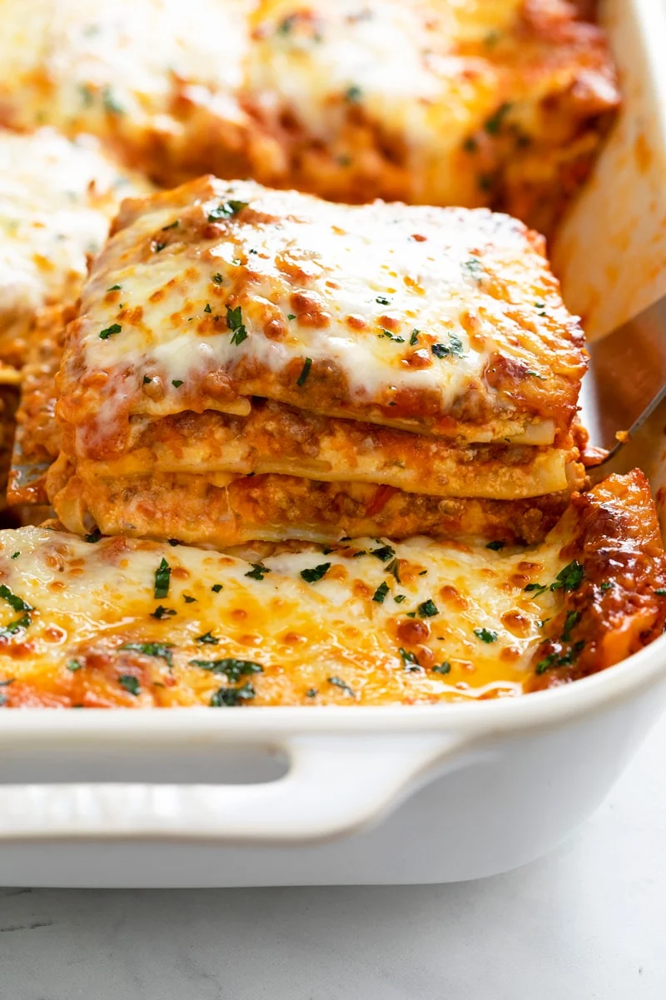

Easy Lasagna Recipe

Ingredients:
- 15 oz. ricotta cheese, 2 cups
- 1 large egg
- 2 cups mozzarella cheese
- ¾ cup Parmesan cheese, freshly grated
- 2 teaspoons Italian seasoning
- ½ teaspoon salt
- ¼ tsp pepper
Instructions
1: Combine the cheese filling ingredients in a medium bowl and set aside. Measure out remaining ingredients. 2: Make the meat sauce. Heat olive oil over medium heat and add the diced onions. Let them soften for 10 minutes. 3. Add the ground beef and sausage and increase heat to medium-high. Use a spatula to break up the meat so that it’s very fine and crumbled. Cook for 8-10 minutes, or until cooked through. Add garlic during the last minute. Drain excess grease. 4. Add the chicken broth and use a silicone spatula to “clean” the bottom and sides of the pot. Add the marinara sauce, tomato paste, hot sauce, and Worcestershire sauce. Bring to a boil, then reduce to a simmer. Cover partially and let the sauce simmer gently while you boil the pasta noodles. 5. Preheat oven to 375°. 6. Begin boiling a large pot of salted pasta water for the lasagna noodles. Once a rapid boil is reached, cook the noodles to al dente according to package instructions. (Set a timer to ensure you don’t overcook them.) Gently stir with a wooden spoon throughout cooking to prevent the noodles from sticking. Drain and rinse with cold water until noodles are completely cool. 7. Lay the cooled noodles flat on wax or parchment paper while you begin assembling the lasagna. 8. Spread 1 heaping cup of meat sauce on the bottom of a 9 x 13-inch casserole dish. Next, add 4 lasagna noodles, overlapping them if needed. 9. Spread 1/3 of the ricotta cheese mixture over the noodles, followed by about 1 ½ cups of meat sauce. 10. Top with 4 more lasagna noodles, 1/3 of the ricotta cheese mixture, 1 ½ cups meat sauce. 11. Finish with 4 more lasagna noodles, the rest of the ricotta mixture, and the rest of the meat sauce. 12. Top with 2 ½ cups of Mozzarella cheese. 13. Spray foil with nonstick cooking spray and place it spray-side-down on top of the baking dish to prevent the cheese from sticking to it. 14. Bake for 35 minutes. Remove cover and bake for 10 more minutes. 15. Remove and garnish with fresh parsley. Let it sit for 15 minutes prior to serving to allow the layers to set.
Credit: https://thecozycook.com/easy-lasagna-recipe/#wprm-recipe-container-44443
ABOUT
This is a website meant to serve as a sort of miniature blog, to source out some of my favorite recipes and make them known. I will credit all sources I use. I will include a list of ingredients as well as instructions on how to make each recipe. The one you see above is my favorite, a pretty simple recipe for lasagna. Other pages on this website will host 3 different categories: Meat, Pasta, and Vegetable.